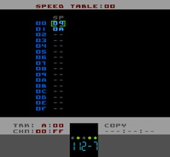

Speed Table Editor Page
The Speed Table Editor shows one entire Speed Table. Speed Tables are similar to Grooves in LSDJ. However, because Pulsar/NES cannot run at arbitrary tempos as LSDJ can, Speed Tables not only control the 'groove' of your Song but also the playback speed.
You must specify the starting Speed Table for each Song in the Setup Page but you can also select a Speed Table within your Song by using the Speed Table command Gxx
As you can see, the Speed Table only has one column labelled SP
Pulsar will step through the Speed Table until either the end (step 0F) or until an empty cell, '--'. At that point the Speed Table will start again at the beginning and continue looping.
If you just want a 'straight' speed then just set your desired speed in the first step of the Speed Table. If you want to create a 'groove' then you can specify multiple speeds (up to sixteen in one Speed Table). There are the same number of steps in a Speed Table as there is in a Pattern so that you could set the tick speed for the individual steps of an entire Pattern if you wanted to.